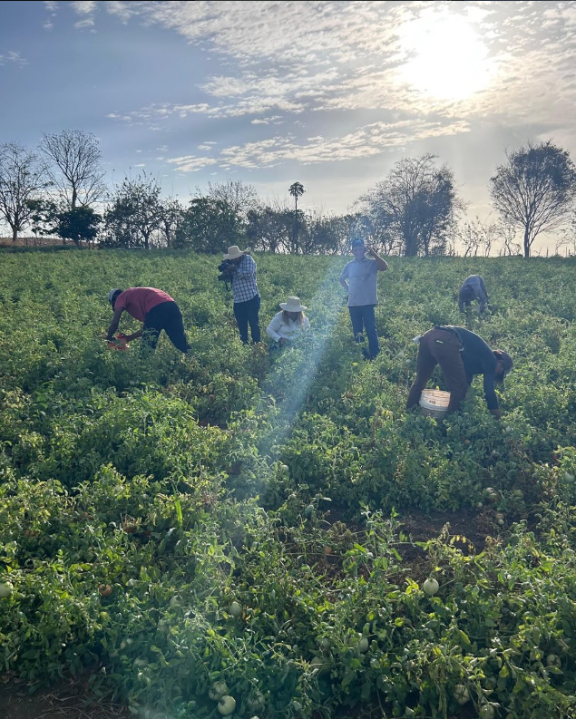

Cooperativa Agropecuaria El Progreso R.L
Más de 50 años impulsando el desarrollo cooperativo
Apoya al productor .

Somos Productivos
Dedicados al desarrollo agropecuario con innovación y responsabilidad en cada proyecto.
Nuestra Misión
Ser una organización con responsabilidad social comprometida con el desarrollo cooperativo, brindando servicios eficientes y eficaces.
Desde 1971
Fundada el 19 de julio de 1971, somos una cooperativa de servicios múltiples dedicada al desarrollo agropecuario en Panamá.